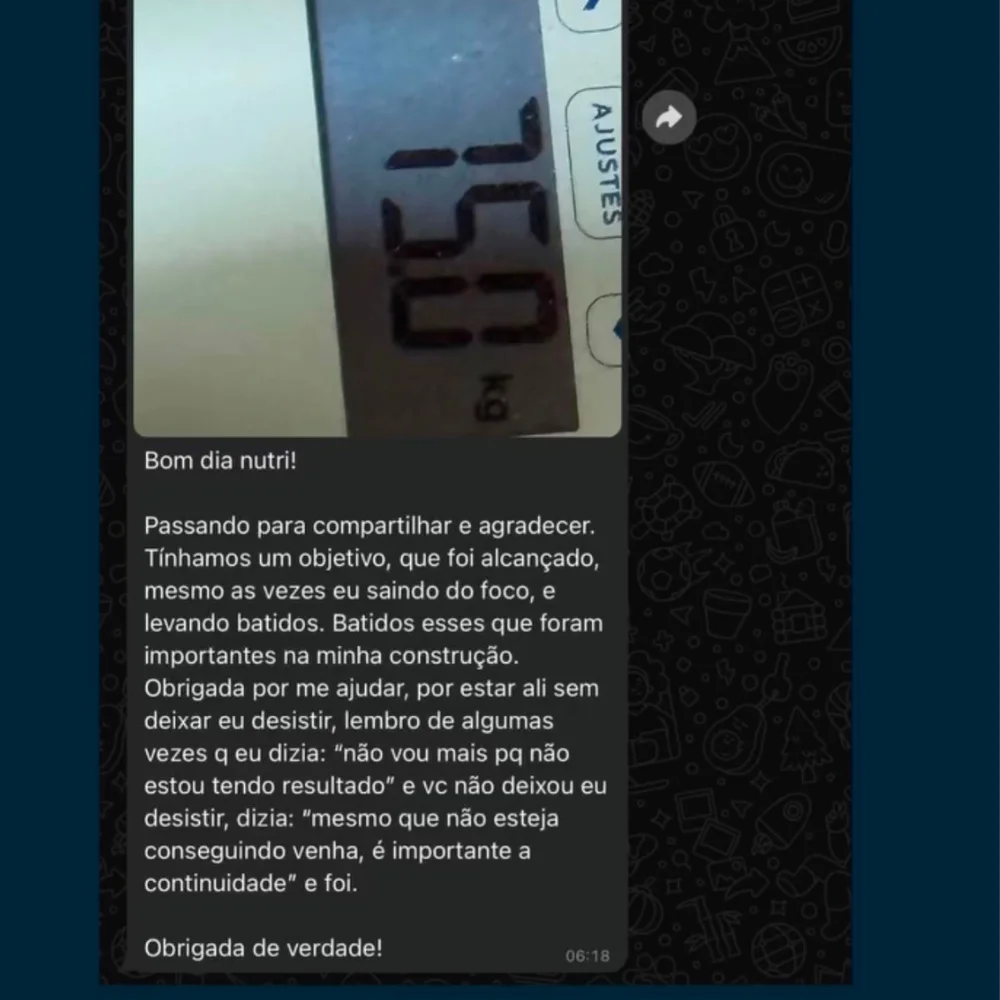
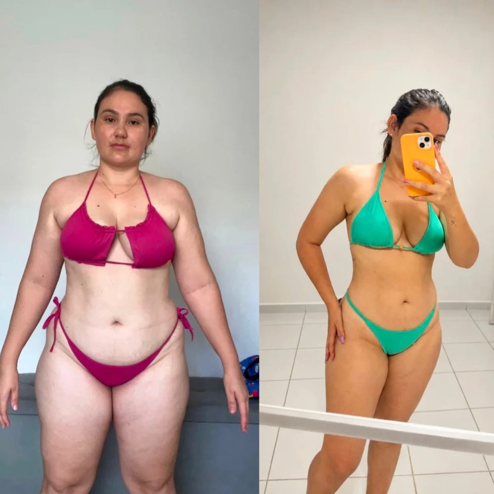
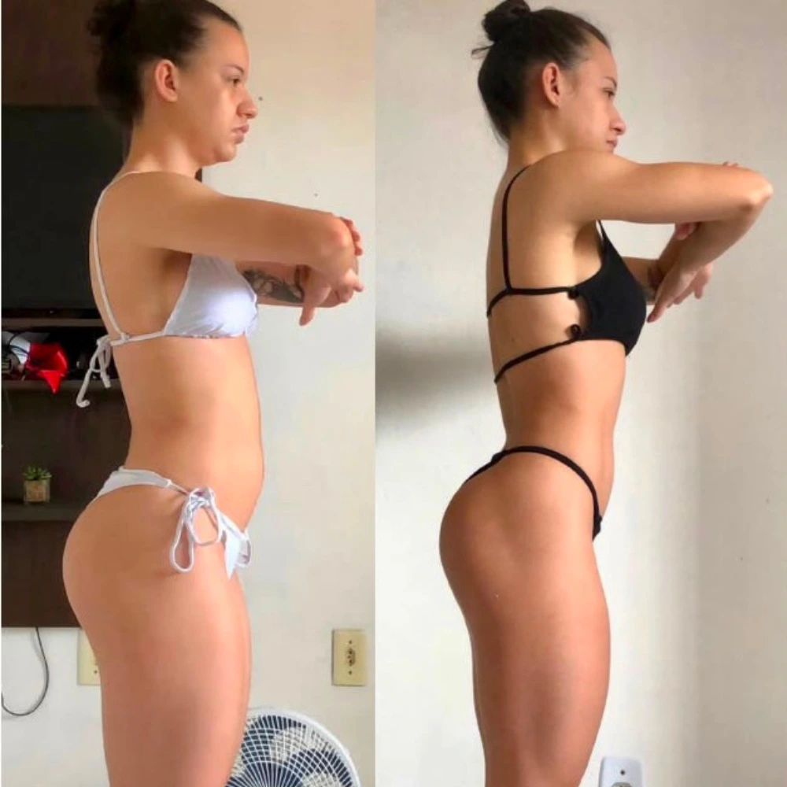
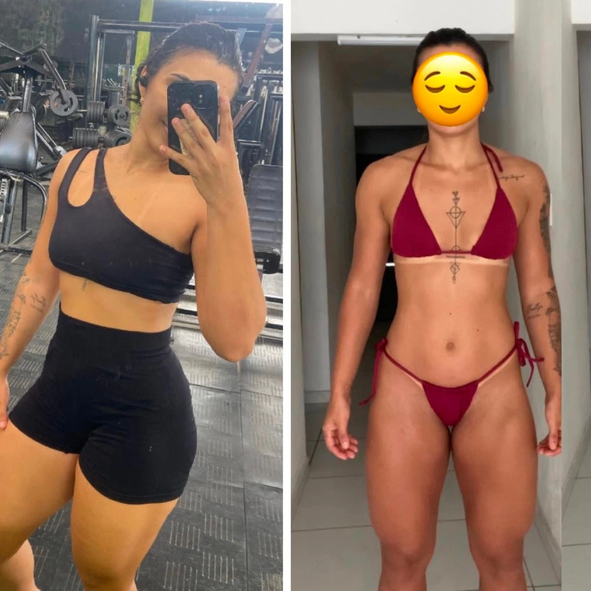
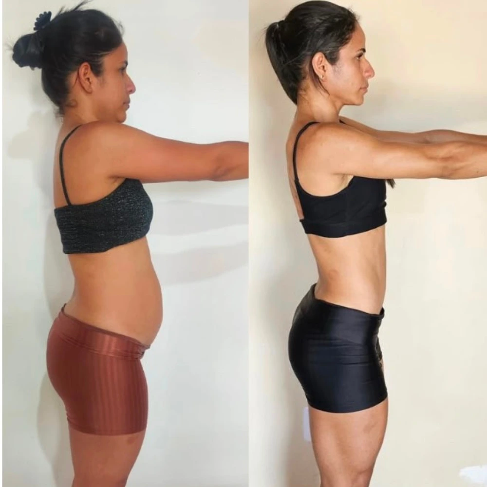

Chega de fazer dietas restritivas que destroem a sua massa muscular. Descubra a estratégia nutricional certa para eliminar a capa de gordura e revelar a definição que o seu treino já construiu.

O erro não está na falta de esforço, mas sim na estratégia de treino e dieta. Se você se identifica com algum dos pontos abaixo, você precisa de um direcionamento.
Você ‘fecha a boca’, perde peso, mas fica com aspecto flácida e de músculos murchos. Sem falar que aquela gordurinha chata continua lá.
Segue planos alimentares monótonos e restritivos que te fazem desistir no primeiro final de semana, recuperando toda a gordura perdida.
Você constrói massa muscular na academia com consistência, mas ela fica totalmente oculta atrás de uma camada teimosa de gordura.
Não é sobre passar fome. É sobre usar a ciência nutricional e ajuste finos de macronutrientes para otimizar o seu metabolismo e queimar gordura de forma eficiente.
Cardápios montados exclusivamente com base na sua rotina, objetivo e preferências alimentares. Sem alimentos impossíveis de achar.
Distribuição precisa de proteínas, carboidratos, gorduras, fibras e micronutrientes. Sempre focando em fornecer energia para máximo desempenho nos treinos e preservação da musculatura.
Suporte 24/7, com acesso total a mim a qualquer momento para sanar dúvidas, dar feedbacks ou pedir ajustes no planejamento.

As vagas para a consultoria são limitadas para que eu consiga garantir a excelência e individualidade de cada protocolo..




Garanta sua vaga agora mesmo
⚡ Resposta imediata